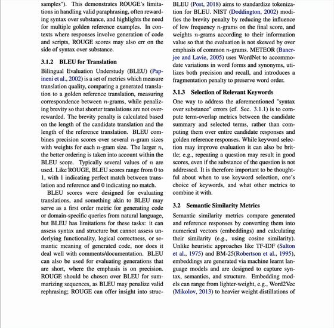

اشرح المصطلحات وأنت تقرأ.
احتفظ بما فهمتَه، واسترجعه عندما تصادف المصطلح مرة أخرى.

يشرح في السياق
حدّد مصطلحًا لتحصل على شرح مبني على الفقرة والقسم اللذين تقرؤهما.
يحتفظ بما تعلّمته محليًا
يُحفَظ كل شرح في متصفحك. لا يوجد خادم لـ Harkback ولا حساب.
يعيده إليك
عندما يظهر المصطلح من جديد، حتى لو كُتب بصيغة مختلفة، ترى ما فهمتَه في المرة السابقة.
النموذج من اختيارك: نموذج Chrome المضمَّن أو Ollama على حاسوبك، أو OpenAI وAnthropic وGoogle Gemini وxAI Grok وDeepSeek وQwen وMoonshot (Kimi) وZhipu GLM وMistral وOpenRouter وغيرها من الخدمات بمفتاح API خاص بك.